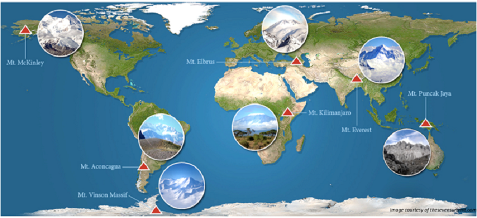
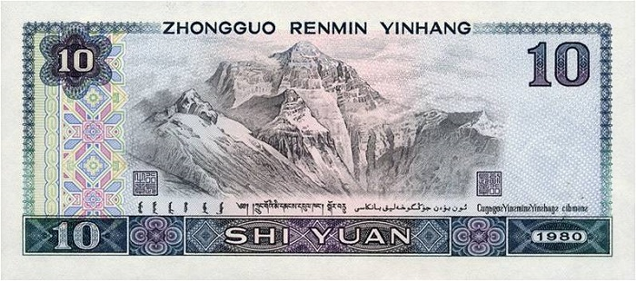

从本篇博客开始要介绍的是世界七大顶峰，小爱会分四篇介绍完。也许大家会有疑问，为什么是“七”大顶峰呢？是这样的，我们的地球陆地被分为七个大洲： 亚洲（Asia）、欧洲（Europe）、北美洲（North America）、南美洲（South America）、非洲（Africa）、大洋洲（Oceania）、南极洲（Antarctica）。每一个大洲都有一座最高的山峰，所以就有了七大顶峰这一说（跟大家透露一下，如果仅以海拔来排名的话，世界前100位高峰都可都在亚洲）。下面该是主角登场了。首先要说的就是我们熟悉的珠穆朗玛峰。
（图片来源：pathtoeverest）
亚洲-珠穆朗玛峰

大家对珠穆朗玛一定不陌生，一提到珠穆朗玛小爱想到的不是这座山，而是一首同名歌“珠穆朗玛~~，珠穆朗玛~~”被洗脑的调调（悄悄告诉大家，演绎这首经典的不是别人是咱们的彭妈妈）。
其实珠穆朗玛峰有好几个名字，我们熟知的珠穆朗玛（Qomolangma）是由藏语而来，在藏语里“珠穆朗玛 ”被翻译为“大地之母”，可以看出珠穆朗玛峰在藏族同胞心中的圣神地位。西方国家则称为“额菲尔士峰”（Mount Everest），而在尼泊尔又被称作萨加马塔峰（Sagarmatha）。以后大家听到这些名字就知道，它们代表的其实都是珠穆朗玛峰。
珠穆朗玛峰不仅是亚洲最高峰，更是全球最高峰，位于中国和尼泊尔交界的喜马拉雅山脉之上。有40多座海拔7000m以上的高峰，更有14座海拔8000m以上的巨峰，形成了珠峰波浪壮阔的景象。正由于其过高的海拔，攀登者们会面对低氧，低温以及强风等恶劣的环境，这也导致了攀登过程的高度危险，因此有了“两点钟规则”意思是攻顶一定要在下午两点前完成，不然就必须回头。攀登珠穆朗玛必须遵守这一规则。尽管如此，珠穆朗玛依旧是登山探险者的圣殿。
高大雄伟的珠穆朗玛不单单受到登山探险们的追捧，它在全世界范围都产生着影响。比如我国的第四代纸币10元的背面就是珠穆朗玛峰。表示怀疑吗？小爱拿证据给大家看。
